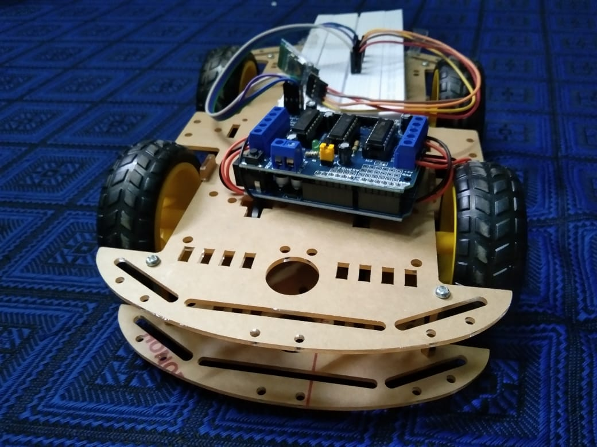

Project Report: Bluetooth-Controlled Robot Car

Introduction
The Bluetooth-Controlled Robot Car project aims to develop a remotely operated vehicle that can be controlled via a smartphone application using Bluetooth technology. This project integrates hardware and software components to create a functional and interactive robot car that provides real-time navigation and control capabilities.
Objectives
- Design and build a robot car chassis with necessary components such as motors, wheels, and a power supply.
- Implement a Bluetooth communication module to enable remote control via a smartphone app.
- Develop a smartphone application for real-time control of the robot car.
- Integrate sensors for obstacle detection and automated responses.
- Test and refine the system to ensure reliability and user-friendliness.
Materials and Components
- Microcontroller (e.g., Arduino or Raspberry Pi): To process commands and control the car.
- Bluetooth Module (e.g., HC-05 or HC-06): For wireless communication between the smartphone and the robot car.
- DC Motors and MotorDriver Module: To enable movement and control of the wheels.
- Chassis Kit: Including wheels, frame, and other mechanical parts.
- Power Supply: Batteries and battery holder for powering the components.
- Sensors: Ultrasonic sensors for obstacle detection.
- Smartphone: To run the control application.
Methodology
- Hardware Assembly: Construct the robot car by assembling the chassis, attaching the motors, connecting the motor driver, and integrating the Bluetooth module and sensors.
- Circuit Design: Connect all electronic components to the microcontroller, ensuring proper power distribution and signal integrity.
- Software Development:
- Microcontroller Programming: Write code to control the motors, process Bluetooth signals, and handle sensor inputs.
- Mobile Application Development: Create a user-friendly app with buttons or a joystick interface for controlling the car’s movements.
- Integration and Testing
- Pair the smartphone with the Bluetooth module.
- Test basic movements (forward, backward, left, right) via the app.
- Implement and test obstacle detection and automated stopping or avoidance.
-
Refinement: Optimize the system for better performance, including refining the app interface and improving the responsiveness of the controls.
Results
The Bluetooth-Controlled Robot Car successfully:
- Responds to commands sent from the smartphone application.
- Moves in all intended directions with minimal latency.
- Detects obstacles and stops or changes direction to avoid collisions.
- Provides a user-friendly interface for remote control.
Challenges and Solutions
- Signal Interference: Occasional disruptions in Bluetooth communication were mitigated by optimizing the placement of the Bluetooth module and ensuring a clear line of sight between the smartphone and the car.
- Power Management: Ensuring consistent power supply was crucial; hence, high-quality rechargeable batteries were used, and power distribution was optimized.
- Sensor Calibration:Fine-tuning the ultrasonic sensors was necessary for accurate obstacle detection and response.
Conclusion
The Bluetooth-Controlled Robot Car project demonstrates the successful integration of wireless communication, real-time control, and autonomous features in a compact robotic system. This project not only highlights the potential for remote-controlled vehicles but also lays the groundwork for future enhancements, such as incorporating advanced sensors and expanding the control application’s functionality.